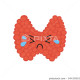

Hypothyroidism
Rx
1.Tab Levothyroxine 50 mcg N=90 daily
نکته1: بصورت ناشتا و با فاصله نیم ساعت از PPI و 4ساعت از کلسیم و آهن مصرف بشه
نکته2: دوز شروع انسولین 1.6*W است. (Weight)
نکته3: بعد 2ماه آزمایش بدید درصورت نیاز 25%تا 50% به دوز روزانه اضافه کنید.
نکته4: در بیماران قلبی با احتیاط و با نصف دوز شروع کنید.
نکته5: برای فالوآپ فقطTSH چک کنید هدف رسیدن به رنج 0.5-2.5 است
نکته6: در بارداری دوز دارو 50% افزایش پیدا میکند وبعد بارداری با دوز قبل بارداری
A Group : Levothyroxine
بسته به علائم بیماری تشخیص افتراقی های مختلفی میتوان در نظر گرفت ولی به طور کلی:
1️⃣ آنمی
2️⃣ لنفوم تیروئید
3️⃣ تیروئیدیت
Euthyroid Sick Syndrome 4️⃣
Panhypopituitarism 5️⃣
6️⃣ کمبود ید
7️⃣ آدیسون
8️⃣ یبوست
9️⃣ ایلئوس
🔟 هایپرکلسترولمی فامیلیال
1️⃣1️⃣ هایپو آلبومینمی
1️⃣2️⃣ کمبود ویتامین D
Hypothermia 1️⃣3️⃣
1️⃣4️⃣ افسردگی
1️⃣5️⃣ دیسمنوره
1️⃣6️⃣ نازایی
1️⃣7️⃣ منوپوز